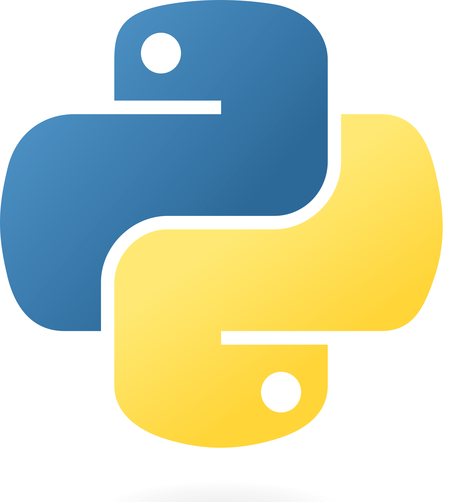

print("Hello World!")Hello World!Tema 4. Implementación y aplicación
Javier Paris
Python es un lenguaje interpretado de alto nivel. Es un lenguaje multiparadigma ya que soporta orientación a objetos, programación imperativa y, en menor medida, programación funcional. Es un lenguaje dinámicamente tipado y multiplataforma.

Python es el lenguaje de programación más popular: .
Python es usado en muchos campos, como:
Existen diversas formas de trabajar con Python, que dependen del entorno que se quiera utilizar, del uso que se le vaya a dar, y del sistema operativo.
Python es un lenguaje interpretado, lo que significa que el código se ejecuta línea a línea. Se puede utilizar Python como un intérprete interactivo donde se ejecuta una línea de código a la vez.
Esto se suele hacer desde una terminal de comandos:
El uso más común de Python es escribir un script en un fichero con extensión .py. Estos ficheros se ejecutan a través del intérprete de Python, que lee el código línea a línea y lo ejecuta.
Para ejecutar el fichero, se hace desde la terminal:
Jupyter Notebook es un formato de documento que permite combinar texto y gráficos con código Python. Esta es la herramienta más extendida en el ámbito de la ciencia de datos y el machine learning.
Google Colab es una plataforma gratuita de Google que permite ejecutar cuadernos de Jupyter en la nube. Esto tiene muchas ventajas;
Esta es la plataforma recomendada para el curso.
Las variables en Python son dinámicamente tipadas, lo que significa que no se especifica el tipo de variable al declararla.
Se asigna un valor a una variable con el operador =.
Todo lo escrito detrás de un # o entre """ es un comentario y no se ejecuta.
Python tiene varios tipos de datos básicos:
int, floatstrboollist, tuplesetdictSe puede cambiar el tipo de una variable con casting.
False
False
True0, string vacío, lista vacía, etc. son considerados False en Python.
Las listas son una colección ordenada y mutable de elementos.
Para acceder a un elemento de una lista, se utiliza el operador [].
Los elementos en las listas se pueden modificar accediendo mediante []. Las listas también pueden ampliarse append y sumarse +.
Las tuplas son una colección ordenada e inmutable de elementos. Se accede a ellas como a las listas, pero no se pueden modificar.
Los sets (o conjuntos) son una colección desordenada y mutable de elementos únicos. No se puede acceder a los elementos salvo por iteración, pero se pueden añadir y eliminar elementos.
Los diccionarios son una colección no ordenada de pares clave-valor.
Los strings son tuplas de caracteres con métodos específicos.
Los bloques de código en Python se definen por la indentación (espacios y tabuladores al principio de la línea). Por eso, es muy importante mantener la indentación correcta.
Los condicionales en Python se realizan con if, elif y else.
El bucle while se ejecuta mientras la condición sea verdadera.
El bucle for se utiliza para iterar sobre una secuencia.
La función range genera una secuencia de números.
El operador break se utiliza para salir de un bucle. El operador continue se utiliza para saltar a la siguiente iteración.
Python tiene una gran cantidad de librerías que se pueden importar y utilizar. Para importar se usa la palabra clave import. Se puede renombrar la librería con as.
Las funciones en Python se definen con la palabra clave def. Estas sirven para encapsular código y reutilizarlo.
Las funciones pueden tener argumentos que se pasan al llamar a la función. Los argumentos pueden usarse por posición o por nombre. También se pueden definir argumentos por defecto, que se usan si al llamar a la función no se especifican.
Las funciones pueden devolver un valor con la palabra clave return.
Estas son algunas de las funciones integradas en Python que se utilizan con frecuencia:
print: Imprime por pantalla
range: Devuelve un iterable con una secuencia de números
len: Devuelve la longitud de un iterable o contenedor
input: Lee por teclado
sum: Devuelve la suma de los elementos de un iterable
min: Devuelve el mínimo de los elementos de un iterable
max: Devuelve el máximo de los elementos de un iterable
any: Devuelve True si algún elemento de un iterable es True
all: Devuelve True si todos los elementos de un iterable son True
sorted: Devuelve una lista ordenada de los elementos de un iterable
Para crear estructuras de datos más complejas, se pueden utilizar clases. La palabra clave class se utiliza para definir una clase.
Las clases pueden tener métodos, que son funciones que pertenecen a la clase. El primer argumento de un método es el objeto que lo llama, por convención se llama self.
Existen varios métodos especiales que se pueden definir en una clase:
__init__: Constructor de la clase__str__: Representación en string de la clase__len__: Longitud de la clase__getitem__: Acceso a elementos a través de []List comprehension es una forma rápida y compacta de crear listas.
Lambda es una forma de definir funciones anónimas en una sola línea.
enumerate es una función que devuelve un iterable con índices y valores.
Los diccionarios se pueden recorrer por clave, valor o ambos.
Se pueden crear bucles que iteren sobre más de un iterable a la vez, cuando el iterable es una colección. La función zip crea un iterable que agrupa los elementos de los iterables que se le pasan.
La herencia es una característica de la programación orientada a objetos que permite crear una nueva clase a partir de una clase existente.
El lenjuaje Python es muy extenso y tiene muchas más características y funcionalidades. En este tema se ha hecho un resumen básico de las ideas principales del lenguaje y los elementos más utilizados.
Animamos a los estudiantes a explorar más sobre el lenguaje y a profundizar en las áreas que más les interesen.